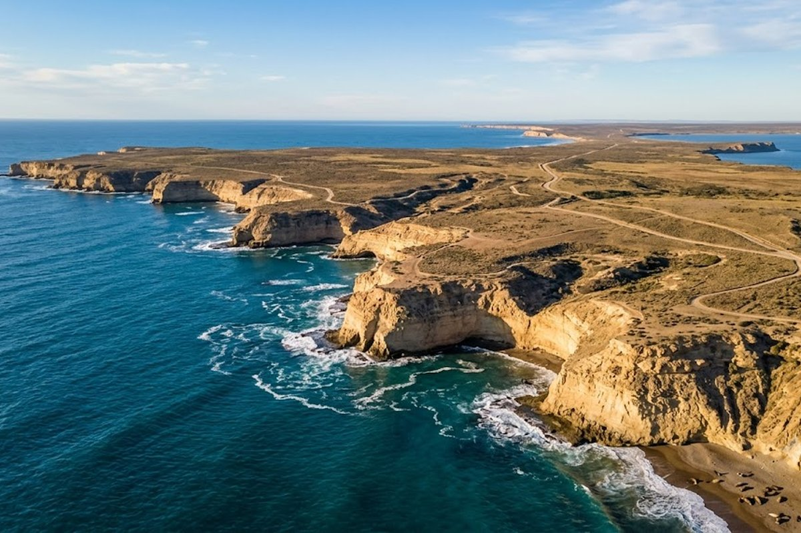
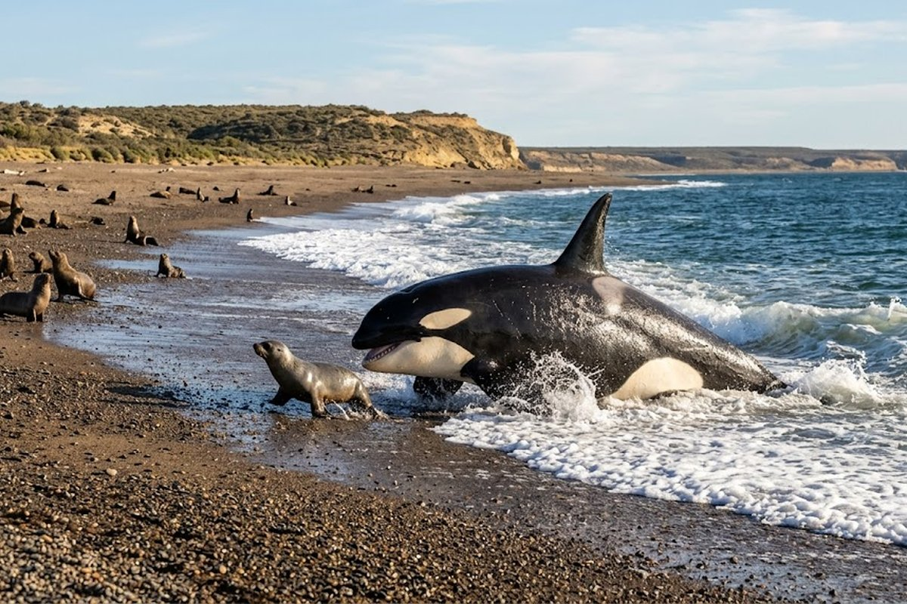
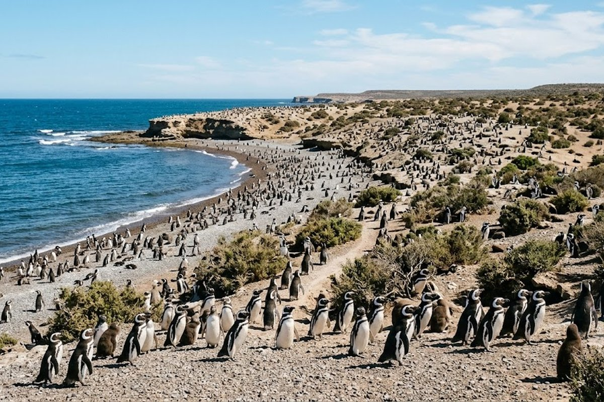
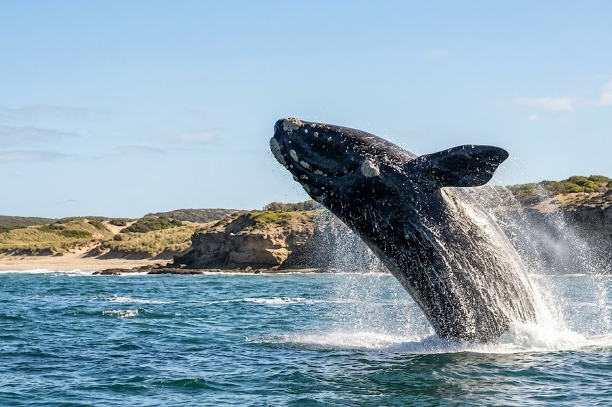

El espectáculo natural más impresionante del Atlántico sur. Ballenas francas australes a metros de la orilla, pingüinos, orcas y lobos marinos.
Puerto Madryn es la puerta de entrada a la Península Valdés, Patrimonio Natural de la UNESCO y uno de los lugares con mayor concentración de fauna marina del mundo. Acá las ballenas francas australes llegan a parir y criar a sus ballenatos a metros de la orilla, las orcas cazan lobos marinos en la playa (técnica única en el mundo) y medio millón de pingüinos de Magallanes viven en Punta Tombo. Es el destino de naturaleza más impresionante de Argentina.



Salida en lancha desde Puerto Pirámides para ver ballenas francas australes de cerca. En julio-noviembre están prácticamente garantizadas.
La colonia de pingüinos de Magallanes más grande de Sudamérica: más de 500.000 pingüinos que caminan libremente entre los visitantes.
Entre marzo y abril, las orcas cazan lobos marinos en la orilla de Punta Norte. Es un fenómeno único en el mundo.
Los lobos marinos de Puerto Madryn son famosos por su curiosidad y juegan con los buceadores. Una experiencia única.
Elefantes marinos y miles de lobos marinos en sus hábitats naturales, sin vallas ni distancias mínimas.
Puerto Madryn tiene una costanera muy linda, gastronomía de mariscos, museos de ciencias naturales y vida urbana tranquila.
Si tu objetivo son las ballenas, julio a noviembre es el momento — y septiembre-octubre es el pico, cuando hay crías. Para ver pingüinos, septiembre a febrero. Si podés elegir, octubre combina las dos cosas: ballenas con crías y pingüinos en plena actividad. Reservá el avistaje de ballenas con anticipación porque los cupos son limitados.
Combinación con Bariloche: Puerto Madryn + Bariloche es el combo "costa + montaña" de la Patagonia. Se conectan por vuelo en 1 hora. 3 noches en cada uno es el itinerario perfecto de una semana patagónica.
¿Cuándo se ven las ballenas en Puerto Madryn?
Las ballenas francas australes llegan entre junio y diciembre, con el pico en septiembre-octubre cuando hay ballenatos. El avistaje se hace en lancha desde Puerto Pirámides, a 95 km de Puerto Madryn.
¿Hay pingüinos también?
Sí, en Punta Tombo (170 km de Madryn) está la colonia continental más grande de pingüinos de Magallanes del mundo — más de 500.000. La temporada es de septiembre a marzo.
¿Es un destino solo de naturaleza o tiene ciudad también?
Puerto Madryn es una ciudad turística bien equipada con buena gastronomía (especialmente mariscos y centolla), hoteles de todas las categorías, museos y una costanera muy agradable. No es solo naturaleza.
¿Es apto para familias con chicos?
Muy apto. Los pingüinos de Punta Tombo caminan literalmente entre los turistas — una experiencia que los chicos no olvidan. El avistaje de ballenas también es apto para todas las edades (consultar mínimo de edad por embarcación).
Armamos tu paquete a Puerto Madryn con todo incluido.
💬 Consultar con Gemicheck